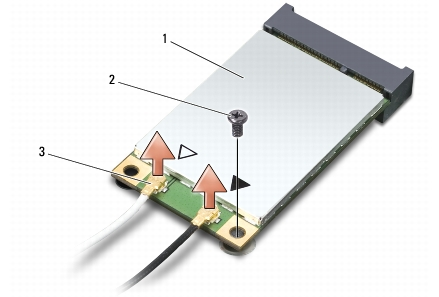
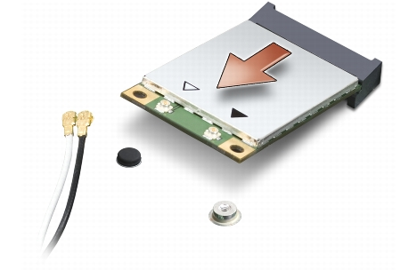

Como remover a Mini-Card
Como remover a Mini-Card
Dell™ Studio XPS™ 1340 Manual de serviço

|
ADVERTÊNCIA: antes de trabalhar na parte interna do computador, siga as instruções de segurança fornecidas com o computador. Para obter mais informações sobre as melhores práticas de segurança, consulte a página inicial sobre conformidade com normalização em www.dell.com/regulatory_compliance. |

|
AVISO: para evitar a descarga eletrostática, elimine a eletricidade estática usando uma pulseira de aterramento ou tocando periodicamente em uma superfície metálica sem pintura (por exemplo, o painel traseiro) no computador. |
|
|
AVISO: somente um técnico credenciado deve executar reparos no computador. Danos decorrentes de mão-de-obra não autorizada pela Dell™ não serão cobertos pela garantia. |
|
|
AVISO: para ajudar a evitar danos à placa de sistema, remova a bateria principal (consulte Antes de trabalhar na parte interna do computador) antes de trabalhar na parte interna do computador. |

|
NOTA: a Dell não garante a compatibilidade com Mini-Cards de terceiros nem dá suporte a essas Mini-Cards. |
Se você comprou uma Mini-Card de rede sem fio com o computador, ela já vem instalada.
O seu computador tem três slots de Mini-Card:
Os tipos de Mini-Cards suportados são:
|
|
NOTA: o computador pode suportar apenas duas Mini-Cards de tamanho normal e uma Mini-Card de tamanho pequeno de cada vez. |
|
|
NOTA: o slot WLAN suporta uma Mini-Card de tamanho pequeno. |
|
|
NOTA: dependendo da configuração do sistema quando ele foi adquirido, um ou mais dos slots pode(m) não ter Mini-Cards instaladas. |
|
|
NOTA: se você estiver removendo uma Mini-Card WPAN, desconecte o cabo azul da antena da Mini-Card. |

|
1 |
Mini-Card |
2 |
parafuso |
3 |
conectores do cabo da antena (2) |

|
|
AVISO: quando a Mini-Card não estiver no computador, guarde-a na embalagem protetora antiestática. Para obter mais informações, consulte "Como se proteger contra descargas eletrostáticas" nas informações de segurança fornecidas com o computador. |
|
|
AVISO: exerça pressão uniforme para encaixar a placa no lugar. Se forçar demais, você pode danificar o conector. |
Conectores na Mini-Card | Esquema de cores do cabo de antena |
|---|---|
WWAN (2 cabos de antena) WWAN principal (triângulo branco) WWAN auxiliar (triângulo preto) |
branco com listra cinza preto com listra cinza |
WLAN (2 cabos de antena) WLAN principal (triângulo branco) WLAN auxiliar (triângulo preto) |
branco preto |
WPAN (um cabo de antena) WPAN |
azul |
|
|
NOTA: se você estiver instalando uma placa de comunicação de um fornecedor diferente da Dell, será preciso instalar os drivers e utilitários apropriados. Para obter mais informações, consulte o Guia de tecnologia Dell. |